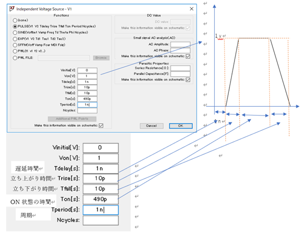

1. 実習3の概要
実習3では、LTspice を使用して、高速な半加算器を設計し、伝搬遅延時間を評価します。さらに、高速化手法として、トランジスタのサイズ調整や段数の最適化を行い、回路の伝搬遅延時間を最小化し、効率的な設計を目指します。
- Transient 解析(過渡解析): 時間的に変化する入力信号に対して、回路がどのように応答するかを解析します。
- インバータチェイン: 実習2で作成したインバータを使用し、5段のインバータチェイン回路を設計します。
- 半加算器の設計: 半加算器は、AとBの2つの入力、S(和)とC(桁上げ)の2つの出力を持つ基本的な回路です。
- 高速化手法の検討: 回路設計において、伝搬遅延時間を最小化するための手法(トランジスタサイズの調整、段数の最適化など)を検討し、シミュレーション結果に基づいて改良します。
2. Transient 解析(過渡解析)
過渡解析は、時間変化する入力に対して回路の動作を解析する手法です。実習3では、DC解析に代わり、時間的に変化する信号に対して回路がどのように応答するかを確認します。具体的には、次の設定が行われます。
- 入力電圧の設定: 振幅 1V、周期 1ns のクロック信号を設定し、インバータチェインに入力されます。
- シミュレーション設定: Transient 解析の Stop time を 20ns に設定し、回路の動作を観察します。
3. インバータチェイン回路図の作成
インバータチェインは、複数のインバータを連続して接続した回路であり、伝搬遅延の評価において基本的なテスト回路として使用されます。インバータチェインは、複数のインバータを直列に接続して作成され、今回の実習3では5段構成とします。このチェインを用いることで、各段ごとの遅延を測定し、信号がどのように伝搬していくかをシミュレーションします。
手順
1. 回路図エディタの起動
LTspice を起動し、新しい回路図ファイルを作成します。ツールバーの「New Schematic」ボタンをクリックして、新しい回路図エディタを開きます。
2. インバータの配置

ツールバーの「Select Component」ボタンを使用し、ライブラリからインバータ(INV)を選択します。最初の段に1つのインバータを配置し、後続の段に4つのインバータを直列に接続します。
注意:ここで、実習2でインバータ回路が正しく作成されていないと、正しい動作が得られません。インバータの設計が未完成の場合、このステップを進める前に実習2の内容を確認して、インバータを完成させる必要があります。
3. 接続と電源の配置
各インバータの出力を次のインバータの入力に接続します。回路全体を電源(VDD)およびグランド(GND)に接続し、電源を適切に設定します。
4. 入力信号の設定
最初のインバータに振幅 1V、周期 1ns のクロック信号を入力として設定します。これにより、インバータチェイン全体に時間的に変化する信号を供給します。
5. Transient 解析の設定
次に、Transient 解析の設定を行います。メニューから Simulate > Edit Simulation Cmd を選択し、以下の設定を行います。
- Stop Time: 20ns
- Time to Start Saving Data: 0ns
- Maximum Timestep:自動設定

4. Transient 解析結果の表示
解析が終了したら、入力から順にインバータの各出力端子をプローブで確認します。これにより、各段での信号伝搬に伴う遅延を可視化し、結果を確認します。

各波形が重なって見えにくい場合は、Plot Setting > Add Plot Pane をクリックして表示スペースを増やしてください。その後、波形のラベルをドラッグして移動させることで、各波形を別々のスペースに表示できます。

5. 回路の保存は不要
このインバータチェイン回路は、特に今後利用する予定がないため、保存は不要です。
6. 解析精度の調整
LTspice での Transient 解析では、解析精度を調整することで、より詳細な結果を得ることができます。ここでは、解析精度を高めるための設定手順を説明します。
手順
1. Edit Simulation Command の表示
回路図上で、.tranの付近を右クリックし、Edit Simulation Command を選択します。これにより、解析条件を設定するウィンドウが表示されます。

2. 設定項目の調整
以下の項目を設定します:
- Stop Time(解析終了時間): 5ns
- Time to Start Saving Data(データ保存開始時間): 0ns
- Maximum Timestep (時間間隔の最大値): 1ps
解析における時間の最大間隔を設定します。より詳細な解析結果を得るために、1psと設定します。
3. 設定を確認
以上の設定を行った後、OK ボタンをクリックして解析設定を反映させます。

7. 遅延時間の計測
LTspice では、伝搬遅延時間を自動で計測することが可能です。シミュレーション結果から、正確な遅延時間を求めるための手順を説明します。
手順
1. カーソル位置ではなく自動計測を使用
伝搬遅延時間は、手動でカーソルを動かして計測するのではなく、自動計測を使用して正確な値を取得します。
2. Spice Directive の設定
Edit → Spice Directive's(もしくはツールバーの一番右端にあるF、または回路図上で S を押す)を選択し、次のように計測条件を設定します:
.meas tran tpd_rise trig V(n004) val=0.5 cross=2 targ V(n005) val=0.5 cross=2.meas コマンドを入力
.meas コマンドを使ってシミュレーション結果から知りたい条件の測定値をログ・ファイルへ出力します。シミュレーション後、View → SPICE Error Log を選択するとログ・ファイルを確認できます。
.meas tran tpd_rise trig V(n004) val=0.5 cross=2 targ V(n005) val=0.5 cross=2- tpd_rise: ラベル
- trig (増加時の条件式): V(n004)が 0.5Vを2回目に横切る時刻(cross=2)をトリガーとして計測します。今回は n004 (X2 と X3の間の電圧)を測定します。
- targ (減少時の条件式): V(n005)が 0.5V を2回目に横切る時刻(cross=2)をターゲットとして計測します。今回は n005(X3 と X4の間の電圧)を測定します。

この設定により、n004の電圧値が0.5V を2回目に横切る時刻から、n005の電圧値が 0.5V を2回目に横切る時刻までを計測し、その結果を tpd_rise としてログファイルに記録します。
3. 結果の確認
シミュレーション結果に基づき、指定した信号の遷移タイミングが正しく記録され、遅延時間が正確に計測されたかを確認します。